0→1 · B2B · iOS Native · Web App
Crowdsourcing platform connecting Nike's global field employees to HQ — launched in 14 key cities to cut the 18-month ideation-to-store cycle with insights from the ground.
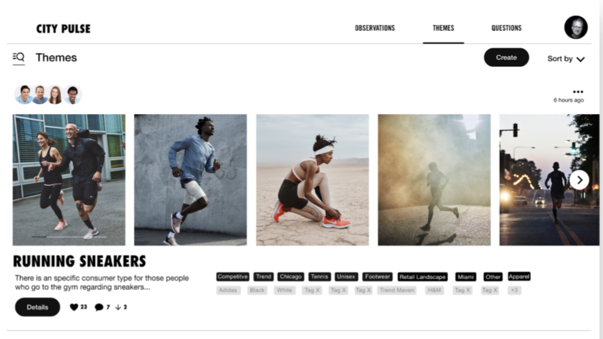
City Pulse · Web companion · HQ insight dashboard
01 — Situation
Nike's product development cycle took up to 18 months — from ideating a new product all the way to having it on store shelves. A major contributor to that delay was a structural disconnect: HQ was making product decisions without any mechanism to gather real-time feedback from the people closest to the market — Nike's own field employees across the globe.
Those employees — retail staff, city reps, market specialists — had rich, on-the-ground knowledge about what customers wanted, what was trending locally, and what wasn't working. But there was no platform to capture it, no way to centralize it, and no channel to feed it back up to product teams where it could actually influence decisions.
The business problem
18-month time-to-market driven by slow feedback loops and no ground-up intelligence mechanism.
The opportunity
Nike had a global workforce with unstructured but highly valuable product intelligence — completely untapped.
"Nike is losing the opportunity to use field-employee expertise to gather insights, centralize data, and inform HQ for better product decision making."
02 — My Role
Embedded at Wizeline as the Senior UX Designer on the Nike City Pulse engagement, I owned the full design arc across a 15-month project — from foundational discovery through usability-tested, production-ready iOS screens, all the way to launch in 14 cities.
I ran stakeholder and SME workshops, facilitated a 5-day in-site foundations session, conducted 50+ user interviews across global markets, and drove design iteration from whiteboard sketches to high-fidelity iOS prototypes — pairing closely with a team of 2 iOS developers, 1 back-end and 1 front-end engineer, and a delivery manager. With no dedicated product manager on the project for extended periods, I regularly stepped into that role — defining requirements, prioritizing the backlog, and aligning stakeholders to keep delivery moving.
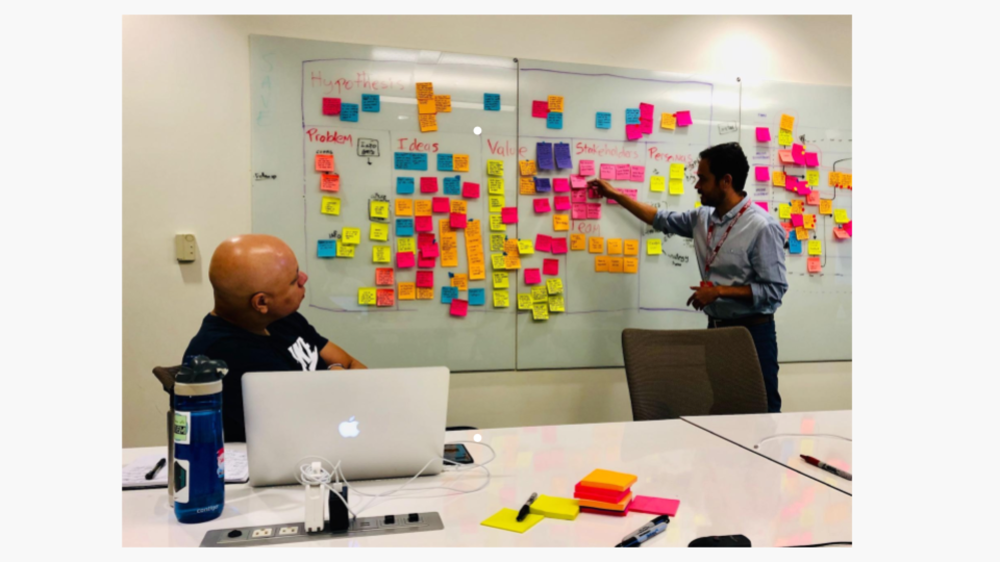
On-site · 5-day foundations workshop · Nike SMEs & stakeholders
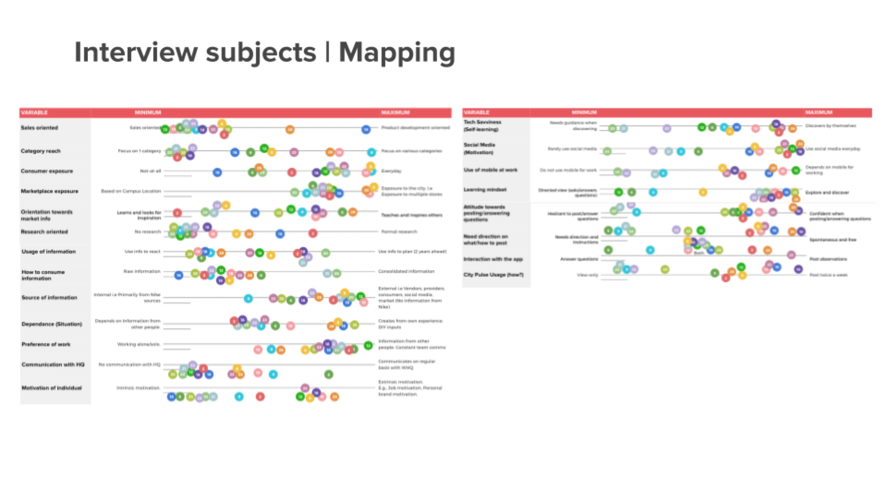
Research · Behavioral mapping · 50+ field-employee interviews
03 — Design Process
The project ran across 15 months — structured in discovery and execution phases that cycled iteratively as new features were scoped and shipped. Every feature went through the full loop: research → wireframes → lo-fi validation → hi-fi prototype → team validation → developer handoff.
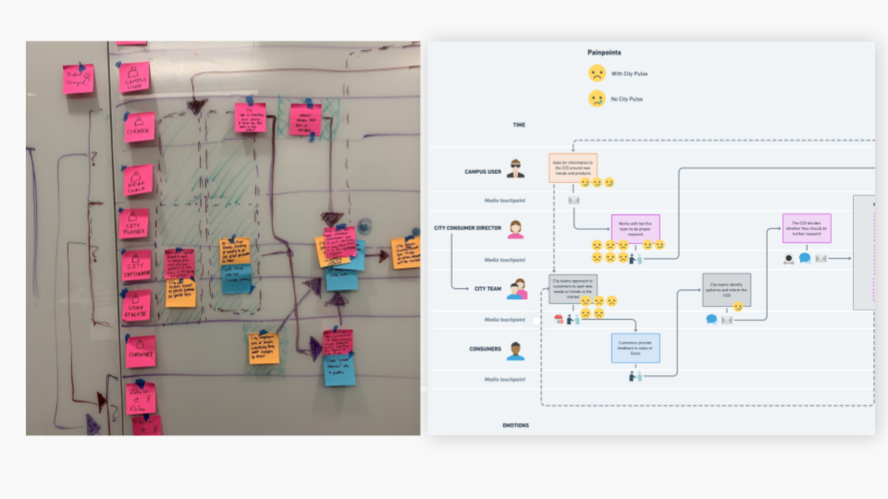
Foundations · Service blueprint · Field employee → HQ insight journey
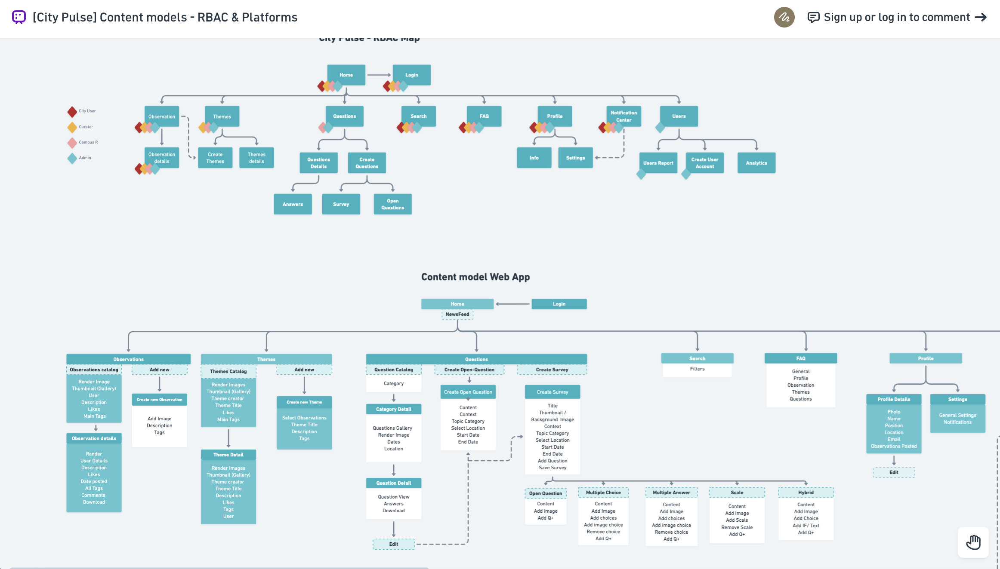
Architecture · OOUX content model · Objects & relationships
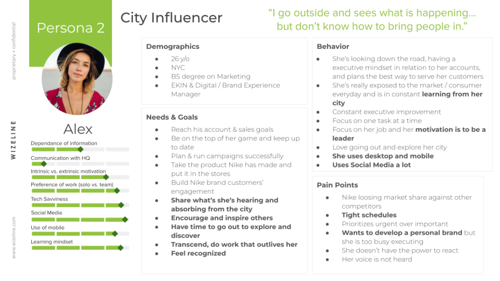
Research · User persona · Synthesized from interviews
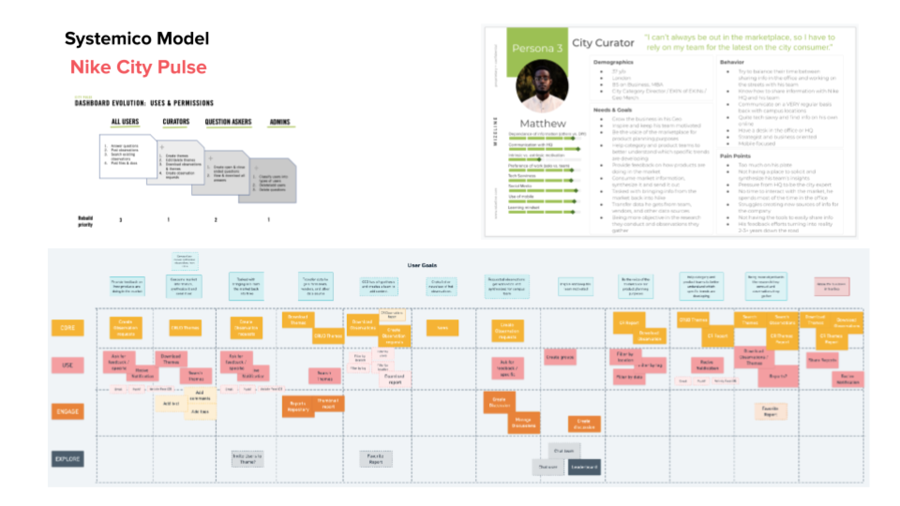
Systemico model · Persona goals → epics → user stories
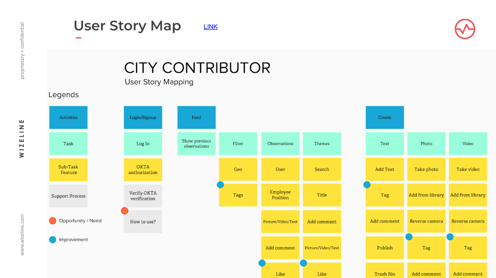
Prioritization · User story map · MVP sequencing
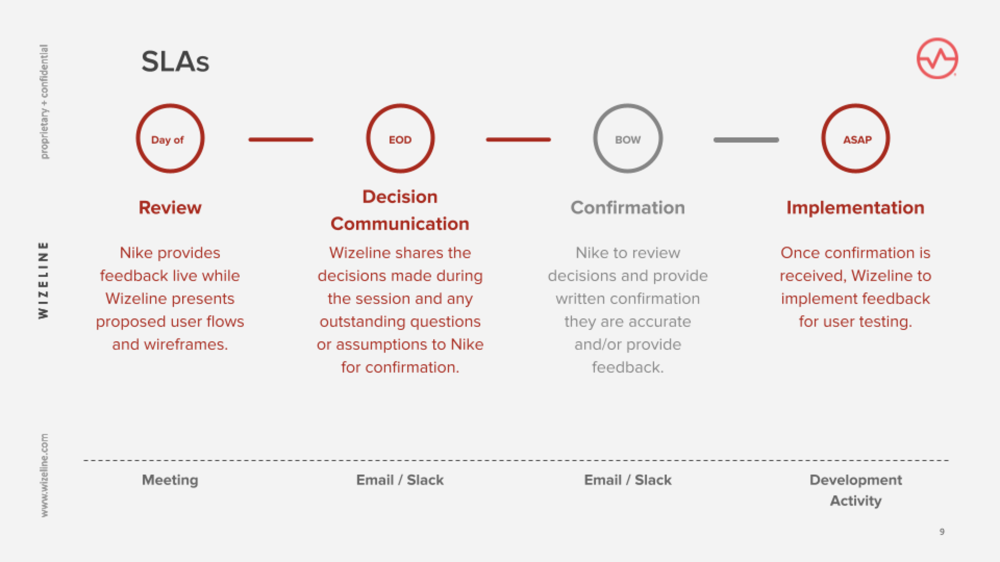
Definition · SLA & feedback-loop expectations
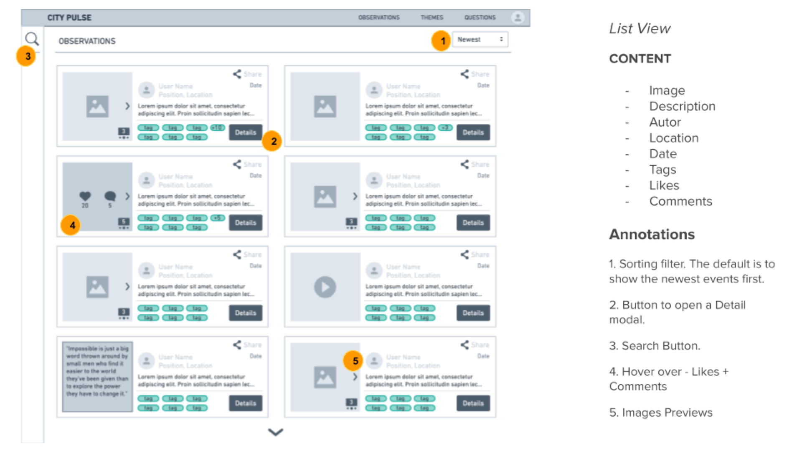
Lo-fi · Wireframe review · iOS exploration
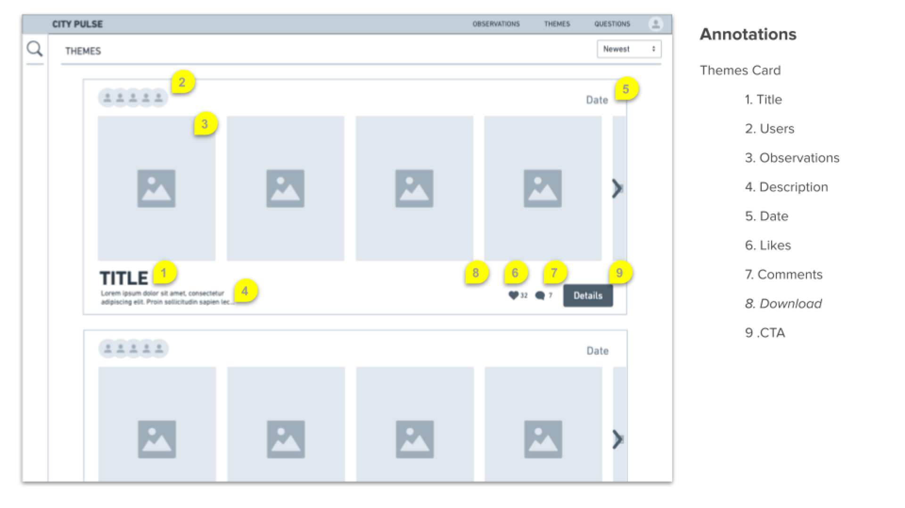
Lo-fi · Wireframe review · Refined flows
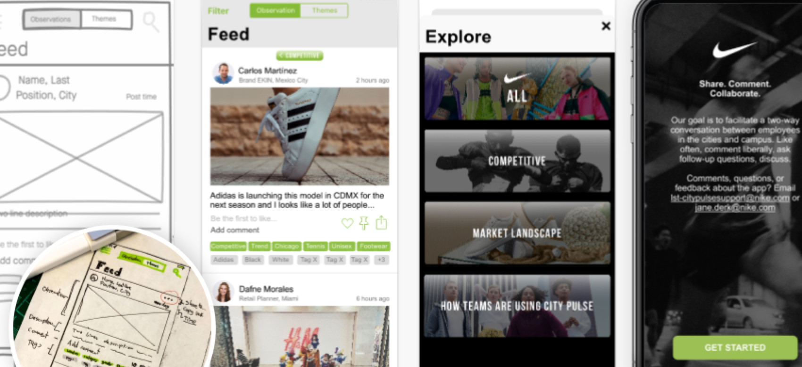
Hi-fi · iOS screen explorations · Onboarding · Themes · Feedback loop
04 — Results
City Pulse launched in 14 key Nike cities globally — giving field employees a direct channel to share insights, observations, and product feedback with HQ for the first time. The platform gave product teams the ability to make better, faster decisions based on real intelligence from the markets where products live and breathe.
The feedback loop closed the gap between ground-level market knowledge and headquarters decision making — directly addressing the 18-month product cycle by surfacing the right insights earlier in the process.
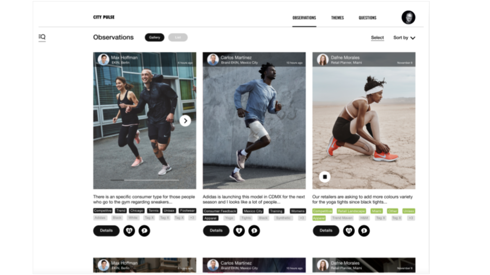
City Pulse Web App · Observations · HQ insights
City Pulse Web App · Themes · Curator · HQ insights